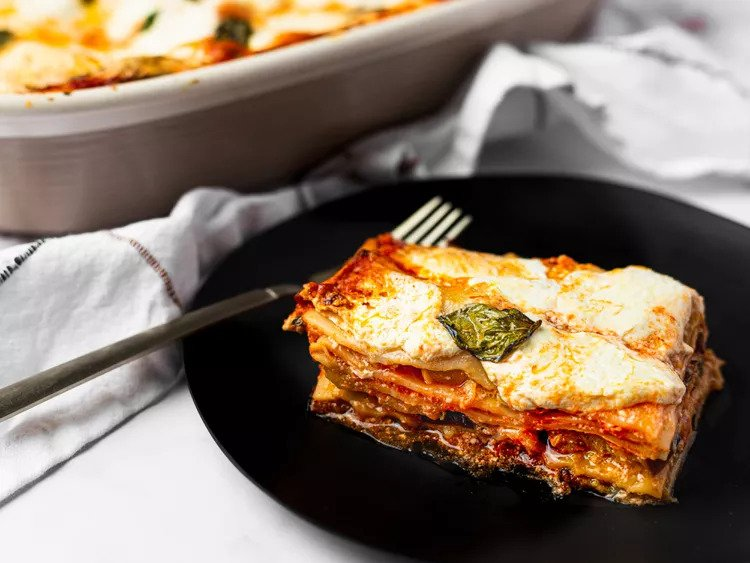
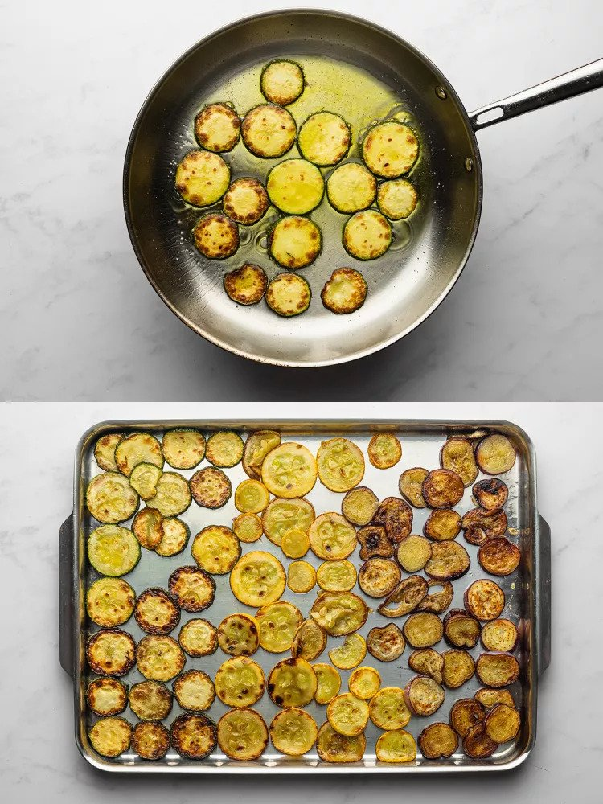
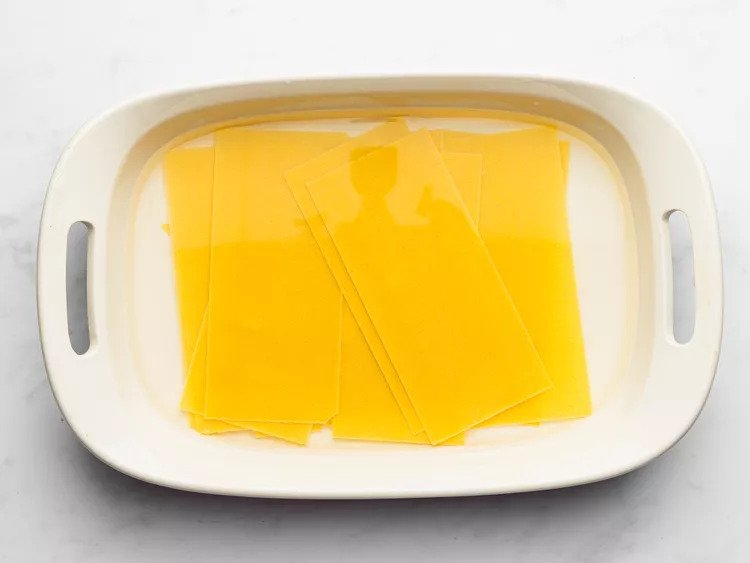
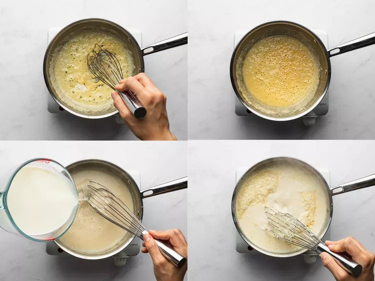
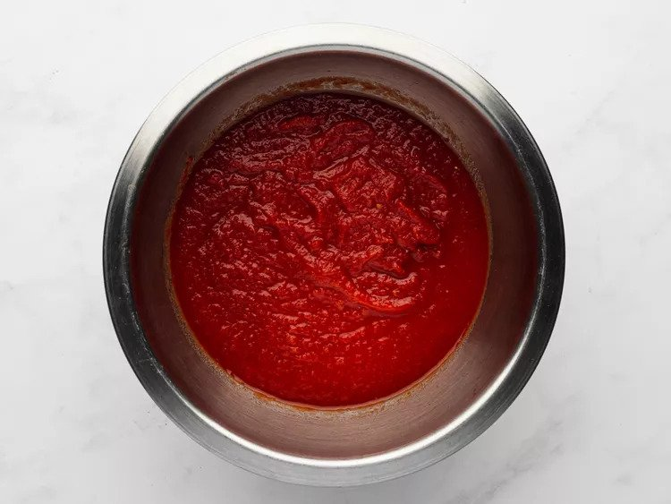
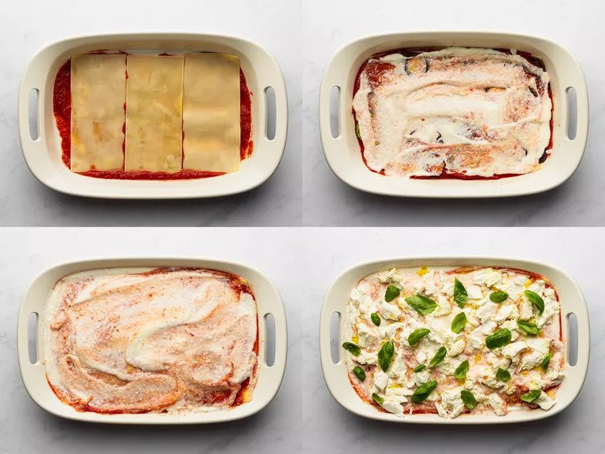
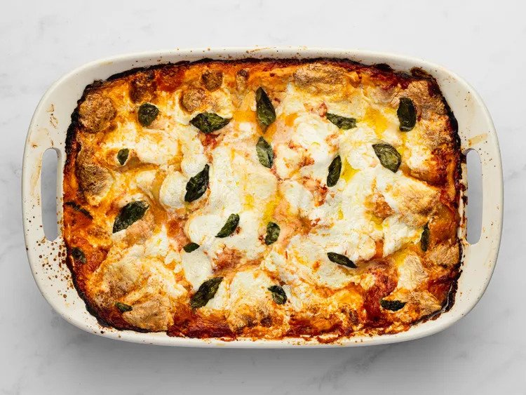

Summer Vegetable Lasagna

A light (but not too light) lasagna layered with eggplant, summer squash, zucchini, tomatoes, and basil.
Ingredients
- About 1/2 cup extra-virgin olive oil, divided
- 3/4 pound zucchini (about 2 medium), thinly sliced crosswise between 1/8 and 1/4 inch thick
- Kosher salt
- 3/4 pound summer squash (about 2 medium), thinly sliced crosswise between 1/8 and 1/4 inch thick
- 3/4 pound Japanese eggplant (about 2), thinly sliced crosswise between 1/8 and 1/4 inch thick
- 15 no-boil lasagna noodles (1 box)
- 3 tablespoons butter
- 3 tablespoons all-purpose flour
- 1 quart whole milk
- 2 ounces freshly grated Parmesan cheese
- 1 quart crushed tomatoes
- 3/4 pound fresh mozzarella cheese, torn into rough chunks
- Handful of basil leaves
Directions
- In a large skillet, heat 2 tablespoons olive oil over high heat until shimmering. Working in batches and being sure not to crowd the pan, add zucchini, season with salt, and cook, turning, until just tender and browned in spots, about 4 minutes per batch. Add more oil as needed to prevent pan from drying out, and adjust heat as needed throughout to maintain a very hot, but not heavily smoking, pan. Transfer each batch to a baking sheet and spread in an even layer to cool, then transfer cooled slices to a second baking sheet or plate. Repeat with remaining zucchini, squash, and eggplant until all vegetables are lightly browned.

- Place lasagna noodles in a 9- by 13-inch casserole dish and cover with hot water. Let noodles soak while you prepare the white sauce, agitating them every few minutes to prevent sticking, about 20 minutes total.

- Heat butter in a medium saucepan over medium heat until melted. Add flour and increase heat to medium-high. Cook, stirring butter and flour with a whisk until pale golden blond, about 1 minute. Whisking constantly, slowly drizzle in milk. Continue to cook, whisking frequently, until mixture comes to a boil and thickens. Remove from heat and add Parmigiano-Reggiano. Whisk until smooth. Season to taste with salt. Set aside.

- Season crushed tomatoes to taste with salt.

- Preheat oven to 375°F and adjust rack to center position. Transfer noodles to a clean kitchen towel or layer with paper towels to dry them. Dry the casserole dish carefully and brush with olive oil. Spread a thin layer of crushed tomatoes on the bottom of the baking dish. Layer with 3 lasagna noodles. Top with 1/4 of eggplant, zucchini, and squash, 1/5 of crushed tomatoes, and 1/5 of white sauce. Repeat layers three more times. Place the final lasagna noodles on top and spread with remaining crushed tomatoes and white sauce. Scatter mozzarella evenly over surface and add basil leaves. Drizzle lightly with olive oil.

- Cover dish tightly with aluminum foil and place in oven. Bake for 30 minutes, uncover, and continue baking until lightly browned on top. Remove from oven, let rest 10 minutes, slice, and serve.
